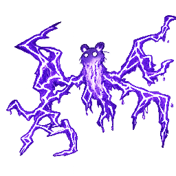
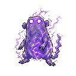

でんき
- 捕獲率
- 45
- 経験値
- 20
進化
進化元

ビリビリマウスレベル進化覚える技
| 習得 | 技 | タイプ | 威力 | 命中 | PP | 分類 |
|---|---|---|---|---|---|---|
| Lv.1 | ひっかく | ノーマル | 40 | 100 | 35 | 物理 |
| Lv.2 | スパーク | でんき | 40 | 100 | 25 | 特殊 |
| Lv.3 | せいでんき | でんき | 0 | 90 | 15 | 変化 |
| Lv.4 | つよいでんげき | でんき | 70 | 80 | 15 | 特殊 |
| Lv.5 | しびれるこぶし | でんき | 75 | 100 | 15 | 物理 |
| Lv.7 | しびれのなみ | でんき | 0 | 90 | 20 | 変化 |
| Lv.9 | でっかいかみなり | でんき | 110 | 70 | 10 | 特殊 |
| Lv.10 | すごくつよいこうせん | ノーマル | 150 | 90 | 5 | 特殊 |
カウンターできる相手


カウンターされる相手


変更履歴
sha256:ecbc3effb…初回記録
sha256:63946e9a2…表示中初回記録